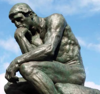

Introducción
Las preguntas filosóficas no buscan respuestas rápidas, sino explorar posibilidades, tensiones y límites de nuestra comprensión
del mundo. Este tema enseña a formular preguntas profundas sobre existencia, conocimiento, valores, justicia y belleza, fomentando
curiosidad intelectual, creatividad conceptual y capacidad de problematizar lo que se da por sentado. En el marco del MCCEMS 2025,
formular preguntas filosóficas se convierte en una práctica esencial para desarrollar pensamiento crítico autónomo, dialogar con
pluralidad y contribuir a la transformación social desde una perspectiva humanista que valora la dignidad, la justicia y el cuidado
de lo común. Aprender a preguntar bien es el primer paso para dejar de repetir discursos prefabricados y comenzar a pensar por
cuenta propia en un contexto marcado por la desinformación, la polarización y la aceleración tecnológica.
Tipos de preguntas filosóficas
Ontológicas (¿qué es la realidad?, ¿qué significa "ser"?), epistemológicas (¿cómo conocemos?, ¿es posible la verdad
objetiva en la era de la posverdad?), éticas (¿qué es lo bueno?, ¿cuándo es legítimo limitar la libertad por el bien común?),
estéticas (¿qué es bello?, ¿cómo valoramos el arte generado por IA?). Estas categorías no son aisladas: una pregunta ética
suele implicar supuestos ontológicos (¿qué es el ser humano?) y epistemológicos (¿cómo sabemos qué es justo?).
- Clasificación: ontológicas (¿qué es?), epistemológicas (¿cómo conocemos?), éticas (¿qué debo hacer?),
estéticas (¿qué es bello?), políticas (¿qué es una sociedad justa?).
- Preguntas abiertas: no tienen respuesta única, invitan a múltiples perspectivas y evolucionan con el diálogo.
- Importancia: fomentan curiosidad, pensamiento crítico y capacidad de problematizar la realidad.
- Ejemplos actuales: ¿La inteligencia artificial puede tener derechos? ¿Es ético editar genéticamente embriones
humanos? ¿Qué responsabilidad tenemos ante el cambio climático?
Figura 1: Laberinto con bombilla brillante → simboliza el surgimiento de preguntas profundas y creativas
Figura 2: Signos de interrogación → representa la transición del asombro a la problematización crítica
Del asombro a la problematización
Ejemplos: ¿Qué significa ser feliz en la sociedad actual dominada por el consumo y las redes sociales?
¿La tecnología nos libera o nos controla mediante vigilancia algorítmica? ¿Por qué normalizamos la desigualdad extrema
mientras millones carecen de lo básico?
Estas preguntas enriquecen la visión del mundo y preparan para una praxis transformadora.
Dato importante
Formular preguntas rigurosas es el primer paso para el diálogo filosófico y el pensamiento autónomo. En el bachillerato,
se busca que los estudiantes pasen de preguntas espontáneas a preguntas conceptuales, argumentadas y abiertas al pluralismo.
Desarrollo del Tema
Las preguntas filosóficas se distinguen por su carácter abierto, profundo, controvertido y no resoluble mediante un simple “sí o
no”. Invitan a múltiples perspectivas, exigen razonamiento cuidadoso y suelen carecer de respuestas finales, lo que las hace
especialmente valiosas para formar mentes críticas y creativas.
Preguntas sobre la vida y la existencia
Ejemplos: ¿Cuál es el sentido de la vida en un mundo marcado por la incertidumbre climática y la precariedad laboral? ¿Somos
libres o estamos condicionados por estructuras económicas, culturales y algorítmicas? Se exploran desde perspectivas
existencialistas (Sartre: “el ser humano está condenado a ser libre”; Camus: el absurdo y la rebelión), humanistas contemporáneas
(enfoque en dignidad y capacidades) y decoloniales (sentido de la vida desde cosmovisiones indígenas y afrodescendientes).
Preguntas críticas sobre certezas
Cuestionar verdades preconcebidas: ¿Es la realidad independiente de nuestra percepción o está mediada por lenguaje, cultura y
tecnología? ¿Podemos confiar plenamente en la razón (racionalismo) o en los sentidos (empirismo) en una era de deepfakes y
realidad aumentada? Estas preguntas ayudan a desnaturalizar lo que se presenta como “inevitable” (desigualdad, extractivismo,
vigilancia masiva) y abren posibilidad de cambio.
Ejemplos Visuales
Ejemplo 1: Laberinto con bombilla → simboliza preguntas filosóficas como laberinto de ideas
Ejemplo 2: Sinos de interrogación → representa el inicio del cuestionamiento autónomo

Ejemplo 3: Estatua de pensamiento → simboliza la reflexión filosófica y la búsqueda de sentido
Conclusión
Las buenas preguntas abren puertas al entendimiento y al cambio. Este tema prepara para
participar en diálogos argumentativos con mayor profundidad.